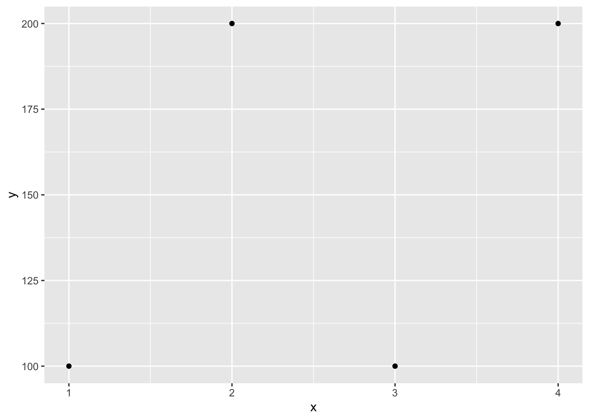
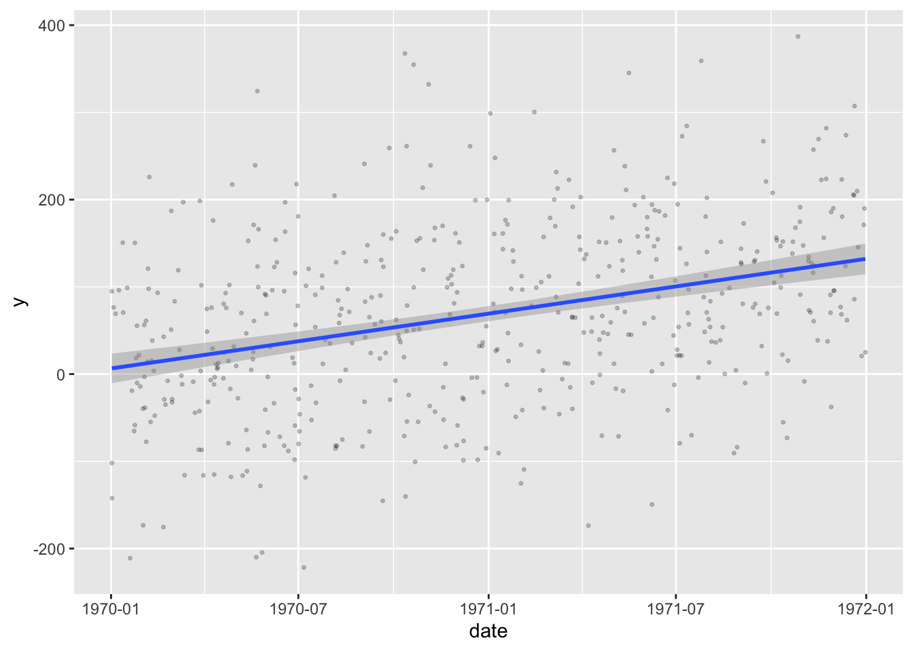

library(dplyr)
library(ggplot2)Data types and structures
Terminology: Objects and classes
- Objects & variables
Everything in your environment has a name (variable) and a value (object)
- Classes
Specific sets of attributes that define different types of objects
Basic data types
Numerics
Integers
x <- 1L
typeof(1:5)[1] "integer"class(1L)[1] "integer"Doubles
x <- 1.3
typeof(x)[1] "double"class(x)[1] "numeric"However, both can be seen as instances of numeric:
is.numeric(1L)[1] TRUEis.numeric(1.3)[1] TRUEComplex
6i[1] 0+6itypeof(6i)[1] "complex"Character
"Hello"[1] "Hello"typeof("Hello")[1] "character"Logical
TRUE[1] TRUEFALSE[1] FALSENA[1] NAtypeof(c(T,F,NA))[1] "logical"Raw
"Hello" |> charToRaw()[1] 48 65 6c 6c 6f"Hello" |> charToRaw() |> rawToBits() [1] 00 00 00 01 00 00 01 00 01 00 01 00 00 01 01 00 00 00 01 01 00 01 01 00 00
[26] 00 01 01 00 01 01 00 01 01 01 01 00 01 01 008 |> intToBits() [1] 00 00 00 01 00 00 00 00 00 00 00 00 00 00 00 00 00 00 00 00 00 00 00 00 00
[26] 00 00 00 00 00 00 00Vectors
Numeric vector:
c(1,3,4,2)[1] 1 3 4 2Character vector:
c("Word1", "Word2", "Word3")[1] "Word1" "Word2" "Word3"Logical vector:
c(TRUE, FALSE, TRUE, NA)[1] TRUE FALSE TRUE NAEmpty vector:
c(TRUE, FALSE)[0]logical(0)c("hello", "world")[0]character(0)c(1.0, 2.3)[0]numeric(0)c(1L, 4L)[0]integer(0)Actually, it was all vectors all along:
c(1) == 1[1] TRUEType coercion
Every element in a vector must have the same type
c(1, "Hello")[1] "1" "Hello"# Notice, the num 1 is coerced into "1" (a character)Combining vectors
vec1 <- 1:3
vec2 <- 5
c(vec1, vec2)[1] 1 2 3 5c(vec1, 4, 5)[1] 1 2 3 4 5Larger structures
Matrices - vectors in higher dimensions
matrix(1:6, nrow = 3, ncol = 2) [,1] [,2]
[1,] 1 4
[2,] 2 5
[3,] 3 6Type coercion
c("Hello", 1:4) |> matrix(nrow = 3, ncol = 2)Warning in matrix(c("Hello", 1:4), nrow = 3, ncol = 2): data length [5] is not
a sub-multiple or multiple of the number of rows [3] [,1] [,2]
[1,] "Hello" "3"
[2,] "1" "4"
[3,] "2" "Hello"Creating a matrix by changing dimensionality of a vector
m <- c(1:18)
m [1] 1 2 3 4 5 6 7 8 9 10 11 12 13 14 15 16 17 18dim(m) <- c(3,3,2)
m, , 1
[,1] [,2] [,3]
[1,] 1 4 7
[2,] 2 5 8
[3,] 3 6 9
, , 2
[,1] [,2] [,3]
[1,] 10 13 16
[2,] 11 14 17
[3,] 12 15 18Lists
Lists can contain elements of different class/type and length, and elements can be named:
list1 <- list(
a = c("a", "b"),
b = c(TRUE, FALSE, TRUE, TRUE),
"Some text here",
c = NULL,
"More text"
)
list1$a
[1] "a" "b"
$b
[1] TRUE FALSE TRUE TRUE
[[3]]
[1] "Some text here"
$c
NULL
[[5]]
[1] "More text"(Actually, vectors can also have named elements)
Data.frames
df <- data.frame(
x = 1:4,
y = c(100,200,100,200),
z = c("word1", "word2", "word3", "word4")
)
df x y z
1 1 100 word1
2 2 200 word2
3 3 100 word3
4 4 200 word4list2 <- list(
a = c("a", "b"),
b = c(TRUE, FALSE, TRUE, TRUE),
c = NULL,
df,
my_plot = df |> ggplot(aes(x=x, y=y)) + geom_point()
)
list2$a
[1] "a" "b"
$b
[1] TRUE FALSE TRUE TRUE
$c
NULL
[[4]]
x y z
1 1 100 word1
2 2 200 word2
3 3 100 word3
4 4 200 word4
$my_plot
Other types and structures
Factors
Character vectors with specific levels
c("cat", "c", "Dog", "Dog", "cat") |>
factor(levels = c("cat", "c", "Dog"),
labels = c("Cat", "Cat", "Dog"))[1] Cat Cat Dog Dog Cat
Levels: Cat DogDates and Date-times (yyyy-mm-dd)
# Types
"1970-01-01" |> as.Date()[1] "1970-01-01""2001-04-01 07:30:00" |> as.POSIXct()[1] "2001-04-01 07:30:00 CEST"Notes, dates start at 1970-01-01
# Day 0
as.Date(0)[1] "1970-01-01"as.numeric(as.Date("1969-01-01"))[1] -365Because dates are just numbers behind-the-scenes, R can directly plot dates
# Plotting and calculations
df_n <- 500
df <- tibble::tibble(
date = as.Date(runif(df_n, min = 0, max = 730)),
y = as.numeric(date) * 0.2 + rnorm(df_n, 0, 100)
)
with(df, plot(date, y, pch="."))
And even perform regression analyses on them
df |> ggplot(aes(x = date, y = y)) +
geom_point(alpha = 0.2, size = .6) +
geom_smooth(method = "lm", formula = y~x, se = T)
Difftime objects
diff <- as.Date("1970-01-01") - as.Date("1960-01-01")
diffTime difference of 3653 daysTibble (tidyverse)
Tibbles are built sequentially (i.e., each column is created before the next one); this means that the values from one column can be used in defining the values of the next
tibble <- tibble(x=1:5,
y = x + 5)Subsetting a single column from a tibble allows you to keep the data in tibble-form, whereas subsetting a single column from a df usually gives just the vector that formed that column
df <- data.frame(x=1:5,
y = 6:10)
df[,"y"][1] 6 7 8 9 10tibble[,"y"]# A tibble: 5 × 1
y
<dbl>
1 6
2 7
3 8
4 9
5 10# Unless you use the $ operator
tibble$y [1] 6 7 8 9 10Data.table
A layer on top of data.frames. Comes from the {data.table} package. Useful for writing concise code and lightning fast for very large datasets.
Regular expressions
These are pattern matching tools; useful when you want to match text but don’t want to or are unable to match every single instance of text exactly.
pattern <- "^cat_[1-3]" # reads as "starts with cat_ and is followed by a digit of 1, 2 or 3."
vec <- c("cat_3", "dog_3", "cat_1", "cat_4")
# Check which elements of vec match the pattern
grepl(pattern, vec)[1] TRUE FALSE TRUE FALSEExample Manipulations
Factors
To turn a factor into its index in the ordering of its levels, use as.numeric():
vec |> factor() |> as.numeric()[1] 2 4 1 3Parse numbers
To turn text into numbers (e.g., when importing data from excel), as.numeric() is rather limited:
c("2", "1234", "1,234", "$123", "") |> as.numeric()Warning: NAs introduced by coercion[1] 2 1234 NA NA NA{readr} has some nice parsing functions for various data types:
readr::parse_number("$1,234")[1] 1234readr::parse_number("$1.234", locale = readr::locale(decimal_mark = ","))[1] 1234Work with logicals
Important to know that logicals have three values (TRUE, FALSE and NA). When an expression is evaluated as NA, it does not interpret this as the expression evaluating to FALSE:
x <- 3
ifelse(x == 3, "It's 3", "It's not 3")[1] "It's 3"x <- 4
ifelse(x == 3, "It's 3", "It's not 3")[1] "It's not 3"x <- NA
ifelse(x == 3, "It's 3", "It's not 3")[1] NAThat is NA == 3 will return NA. Same reason you can’t do
x == NA[1] NABut have to instead ask
is.na(x)[1] TRUEFiltering
When filtering things out from a dataset, knowing the logicals don’t automatically evaluate to FALSE when NAs are present is important, as rows can be dropped otherwise:
df <- data.frame(
age = c(60,66,NA,50),
sex = c(1,2,2,2)
)
df |> filter(age > 60) # This only keeps those with KNOWN age > 60 age sex
1 66 2df |> filter(!age > 60) age sex
1 60 1
2 50 2Note, even though age > 60 and !age > 60 seem like complements of each other, the two new datasets combined have 3 rows, not 4. All NAs were dropped entirely.
In order to keep NAs you could specify
df |> filter(is.na(age) | age > 60) age sex
1 66 2
2 NA 2To get the complement of a filter, you can also use the new dplyr::filter_out() command:
df |> filter(age > 60) age sex
1 66 2df |> filter_out(age > 60) age sex
1 60 1
2 NA 2
3 50 2These two datasets combined now have every original row.
Type coercion
If you try to put multiple data types into one vector, a hierarchy determines which data type will come out on top (left dominates right):
Character > Double > Integer > Logical
| Character | Double | Integer | Logical | |
|---|---|---|---|---|
| Character | --- | --- | --- | --- |
| Double | Character | --- | --- | --- |
| Integer | Character | Double | --- | --- |
| Logical | Character | Double | Integer | --- |
Further reading
Working with variables of various types with dplyr
Hadley Wickham’s “Advanced R” - old version (new version is far more advanced)